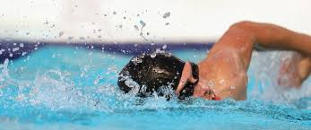
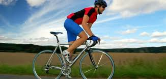
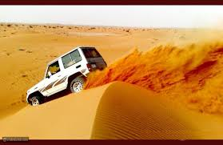

هواياتي هي ليسة واحدة بل متعددة ،
منها القيادة في الصحراء ، السباحه ، ركوب الدراجه ، الهرولة ، لعب كرة القدم ، الالعاب الالكترونية
لكن ان كنت سأفضل احدها على الاخر فهي السباحه ، لانها تعتبر رياضه صحيه وبنفس الوقت ممتعه وغالبا تكون في فترة معينه من السنه ، فلا يمكن السباحه بالشتاء الا بمسبح مدفئ ،، لكن في الصيف ٢٤/٧ يمكنك السباحه
من احد افكاري التي ارغب بتطبيقها من كونها فكرة الى حقيقه
هي ان اكون صاحب شركه او مؤسسه لعدد من المحلات التجاريه وان اكون صاحب خبره عاليه في مجالي



من المقالات وتاريخ رياضة السباحة
رياضة السباحة تُعرّف السباحة بأنها نشاطٌ بدنيّ يتم خلاله دفع الجسم في الماء عن طريق استخدام حركات الذراعين والساقين؛ حيث يؤدي ذلك إلى أن يعوم الجسم بشكلٍ طبيعي في الماء، ويُمكن أن تكون السباحة بمثابة رياضة يُمارسها البعض أو قد تكون عبارة عن نشاطٍ ترفيهي للأشخاص، وقد عُرفت السباحة منذ تاريخٍ طويل يمتد إلى 2500 سنه قبل الميلاد؛ حيث كانت تُمارس في مصر، وُعرفت السباحة في حضارات لاحقة كالحضارة الآشورية، واليونانية، والرومانية، وقد كانت السباحة جزءاً من التدريبات القتالية التي عرفها اليونانيين والرومان القدماء، بل إنها كانت جزءاً من منهاج التدريس الخاص بالذكور في مرحلة التعليم الابتدائي، وعلى صعيد الرياضة التنافسية فقد تم إدراج السباحة للرجال كإحدى الألعاب الأولمبية في عام 1896م، ثم تلتها السباحة الخاصة بالنساء في عام 1912م.[١
المصدر موقع موضوع